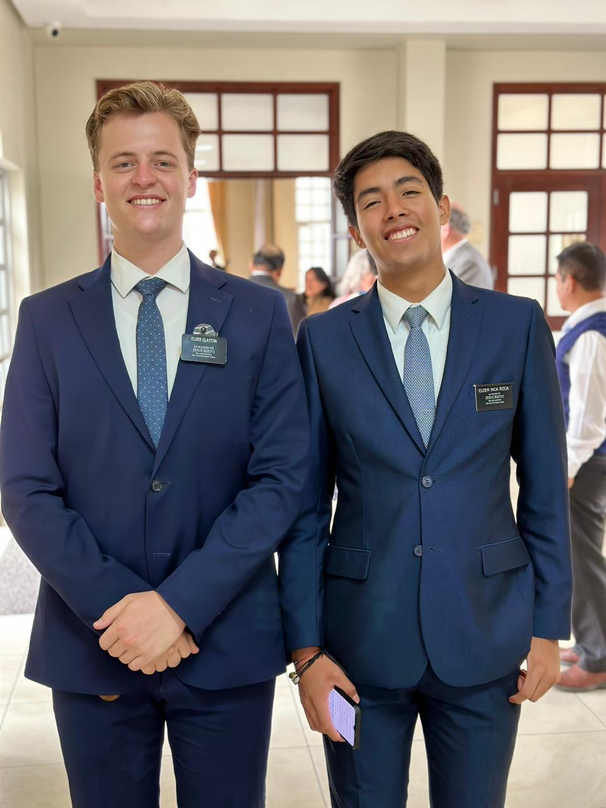

About Me
I’m originally from Cusco, Peru, and I’m currently pursuing a career in Global Supply Chain. At 20 years old, I’ve had the privilege of serving a mission in Peru Lima West, an experience that profoundly shaped who I am today.
Beyond my professional goals, I’m passionate about staying active through triathlons and hiking, which have taught me discipline and perseverance. I’ve also participated in numerous leadership conferences, where I’ve developed essential skills and built meaningful connections.
Interest and Vision
Over the past few years, I have developed a deep passion for helping others. Since returning from my service as a Missionary of the Church of Jesus Christ, I have come to understand the profound importance of caring for the people around us. I believe that service is a cornerstone of harmonious relationships in society and plays a critical role in our growth as individuals.
As a business major aspiring to join the Global Supply Chain program, I am committed to channeling this passion into creating products and services that make people feel valued and heard. In a world where the true meaning of help and care is often misunderstood, I see it as essential to contribute innovative ideas that can shape a brighter future for our society.
I invite you to connect with me to explore opportunities to collaborate, share ideas, and work toward meaningful change. To go places and do things that have never been done before – that’s what living is all about.